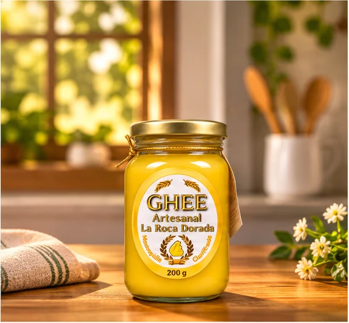
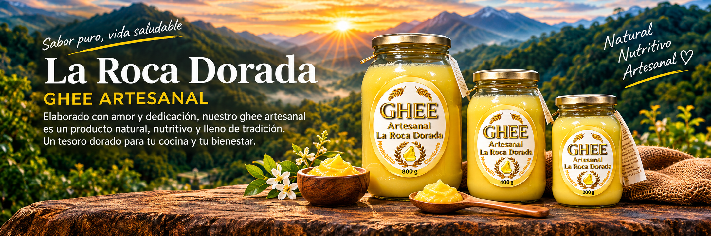
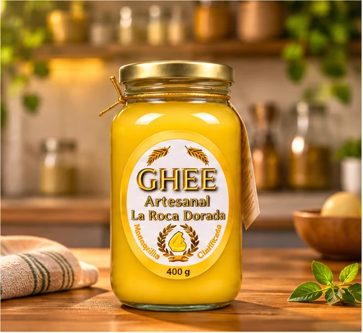
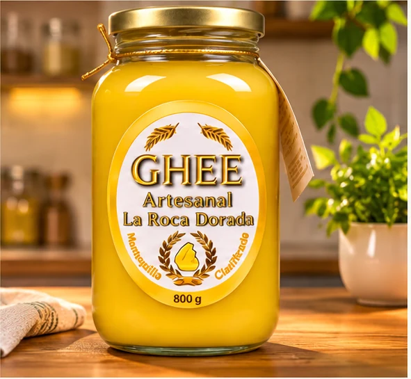

ARTESANAL
✦
CON AMOR
✦
CON AMOR
NUESTRA ESENCIA
Un alimento sencillo.
Un alimento sencillo.
Una dedicación extraordinaria.
En La Roca Dorada creemos en el valor de hacer las cosas bien. Somos un emprendimiento familiar que prepara Ghee artesanal con cuidado, honestidad y gratitud a Dios.
Misión
Elaborar Ghee artesanal de calidad, con amor, integridad y dedicación, para acompañar cada hogar.
Visión
Ser una marca reconocida y apreciada por la calidad de nuestro Ghee y la confianza de nuestros clientes.
NUESTRAS PRESENTACIONES
Elige tu toque dorado
El mismo cuidado artesanal en tres tamaños para tu cocina.

Precios indicados en pesos colombianos. Confirma disponibilidad y condiciones de entrega por WhatsApp.
CONOCE EL GHEE
La belleza está
La belleza está
en lo esencial.
El Ghee es mantequilla clarificada que se cocina cuidadosamente para separar gran parte del agua y los sólidos lácteos. Su aroma característico y su versatilidad lo hacen especial para saltear, cocinar y dar sabor a tus preparaciones.
Llévalo a tu cocina ↗01Sabor y aroma
Un toque agradable que complementa recetas dulces y saladas.
02Versátil en la cocina
Úsalo para preparar huevos, vegetales, arroces y mucho más.
03Hecho con cuidado
Una preparación artesanal a la que dedicamos atención en cada paso.
CONOCE NUESTRO INGREDIENTE
Información para tu cocina
Ideas y datos para conocer mejor el Ghee artesanal.
¿Por qué elegir Ghee?
- Aporta un aroma característico y sabor suave a tus recetas.
- Se utiliza para cocinar y saltear gracias a su punto de humo relativamente alto.
- Su bajo contenido de agua facilita distintos usos en la cocina.
- Es una fuente concentrada de energía procedente de las grasas.
Nutrientes y componentes
El Ghee está compuesto principalmente por grasas: saturadas, monoinsaturadas y pequeñas cantidades de poliinsaturadas. Puede contener vitaminas liposolubles como A y E, en cantidades variables.
La composición exacta de La Roca Dorada debe establecerse mediante análisis o información nutricional verificada. No se presentan cifras inventadas por frasco.
Modos de consumo
- Untar una pequeña cantidad en arepas, tostadas o pan.
- Preparar huevos, vegetales salteados o arroz.
- Agregarlo a guisos, salsas y recetas caseras.
- Utilizarlo como alternativa a la mantequilla o algunos aceites según la receta.
ES IMPORTANTE QUE SEPAS
Disfrutar también es informarse.
El Ghee contiene diferentes tipos de ácidos grasos, entre ellos saturados, monoinsaturados y pequeñas proporciones de poliinsaturados. Las cantidades dependen de la materia prima y del proceso de elaboración.
Es un alimento rico en grasas saturadas, por lo que conviene consumirlo con moderación dentro de una alimentación variada. Aunque la clarificación reduce considerablemente los sólidos lácteos, no garantiza la ausencia total de proteínas de leche o lactosa; quienes tienen alergia a la leche deben tener especial precaución.
El Ghee es un ingrediente culinario, no un tratamiento médico. No se deben atribuir beneficios específicos para el corazón, las hormonas o el sistema inmunológico sin evidencia apropiada.
UN PEQUEÑO DESAFÍO
Protege el verdadero tesoro
Hay nueve frascos: uno es La Roca Dorada. Derriba los otros ocho antes de que termine el tiempo.
¿Puedes salvar el Ghee original?⏱ 12 s · 🎯 0/8
⊕
También puedes apuntar tocando los frascos. El juego es recreativo y no representa ningún producto competidor.
TU VOZ IMPORTA
Queremos conocer
Queremos conocer
tu experiencia.
Tu opinión nos ayuda a seguir mejorando. Puedes compartirla aquí; la revisaremos antes de publicarla.
Las opiniones todavía no se envían a una base de datos: esta versión incluye el
diseño del formulario, pendiente de conexión.